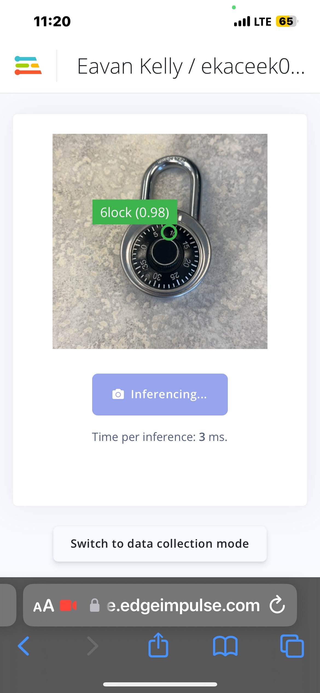
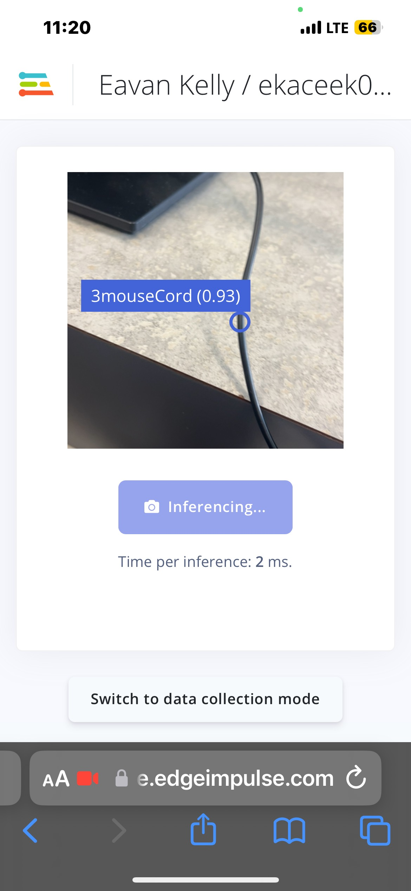
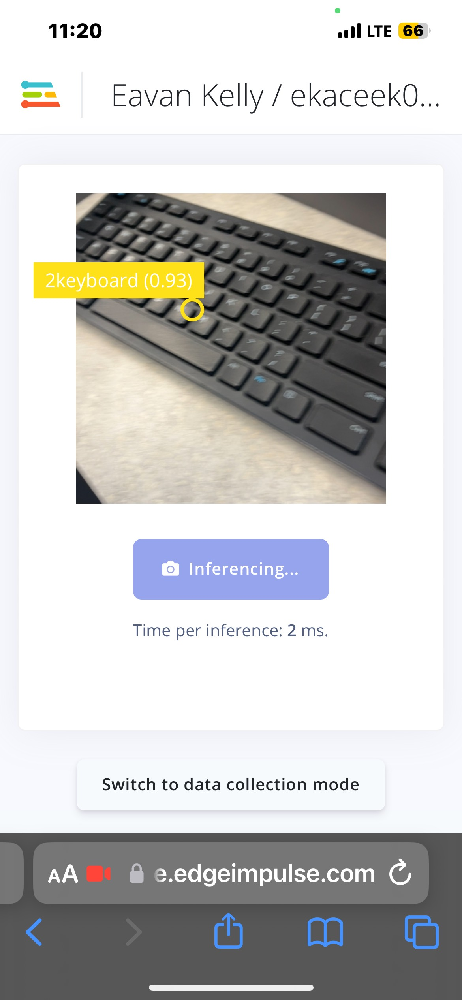

Back to Index
FOMO also know as Faster Objects More Objects makes it so you can detect multiple items seperately or even multiple items in the same image.
Here are some objects I tought it to recognize.
A pen!

|
A lock!

|
A mouse cord!

|
A keyboard!

|